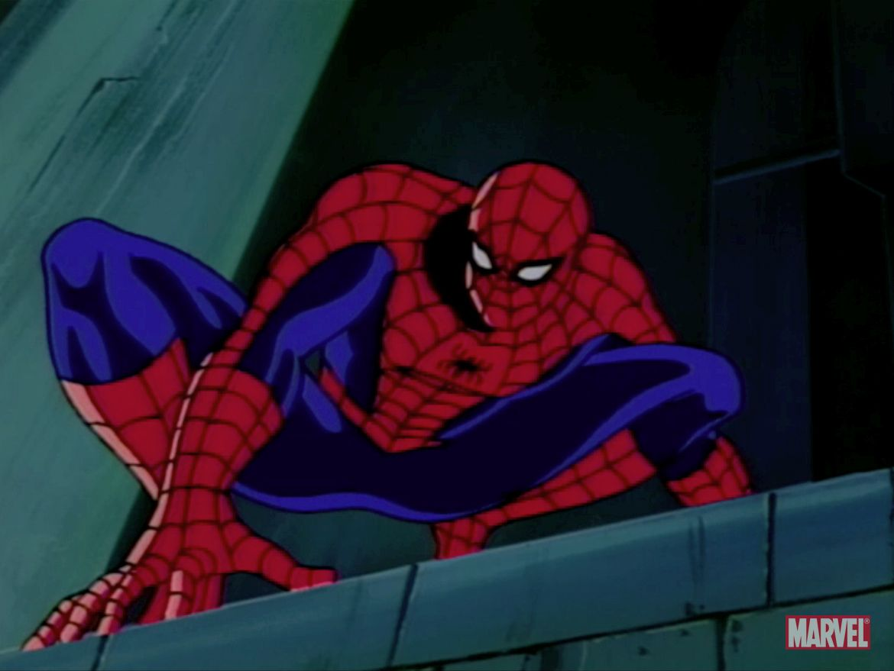

New York's Favorite Newspaper Since 1932
Sunday morning / Cloudy / More Weather. Page 30
New York, NY It was not solong ago that we all heard thevoice of Charles Xavier in ourheads explalning that thingswould be different from that'momenton. I'd argue that eventwas as significant as any inmodern human history. Sincethen, we have seen the birth ofa powerful mutant nation state,
and the terraforming of ourliífeless neighbor into a habitablegarden world. How could themutants accomplish so muchsofast? Well, ¡ttums out they'vebeen keeping a big secret:They have conquered death.In the course of working on thisstory, | ran afoul of a Krakoansecurity apparatus, and while
weaker nations turn to violence,1 was ultimately left to tell thisstory. The implications for liteon this planet are staggering.In the days to come, we'll be discussing the matter withscientists and theologíans, but first, let me tell you about my experiences with the Immortal X-Men. Coverage on pages 0-22
New York, NY The Daily Bugle¡can now reportthat using an as-yet undisclosed technology that mutantdom has solved for death.The rules of death have alwaysappeared to be quite differentforthe Avengers and X-Men, but mutantdom as a species is nowenjoying the benefits ofwhat was.once reserved for a very smallnumber of costumed vigilantes.Our reporting began years agowith the apparent murder of mutant fashion designer Jumbo Carnation. CONTINUED ON PAGE 4
Queens, NY Is the wall-crawler a mutant? We'll look at some of ther signs that point to "yes"! continued on page 16